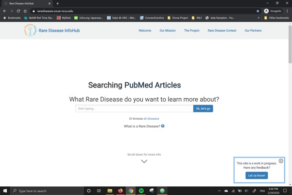

Rare Disease InfoHub.
Overview.
The Rare Disease InfoHub project is a web portal that pulls information about rare diseases from a variety of databases and aggregates them into a central location. It is currently being developed in collaboration with the Department of Computer Science at NC State and the Molecular Modeling Lab at UNC Chapel Hill.
Objective.
Our goal is to make the Rare Disease InfoHub less “clinical,” as described by current users of the website.
My Role.
I’ve been working on this project since May 2019, and began with no prior experience in user interface design. Since then, through a combination of self-instruction and material taught in subsequent courses, I’ve gained varying levels of experience in:
- Wireframing
- Prototyping (Adobe XD, figma, etc.)
- UX/UI
- HTML/CSS
- Documentation
Currently, I am focusing my efforts on a new team that was created within the project since January 2020. In this project, we are developing a re-design of the Rare Disease InfoHub that arranges and presents the information according to select avatars. These avatars will organize and highlight information presented to the user according to their amount of experience with rare diseases and the type of information often sought. Along with this, we are also writing a white paper.